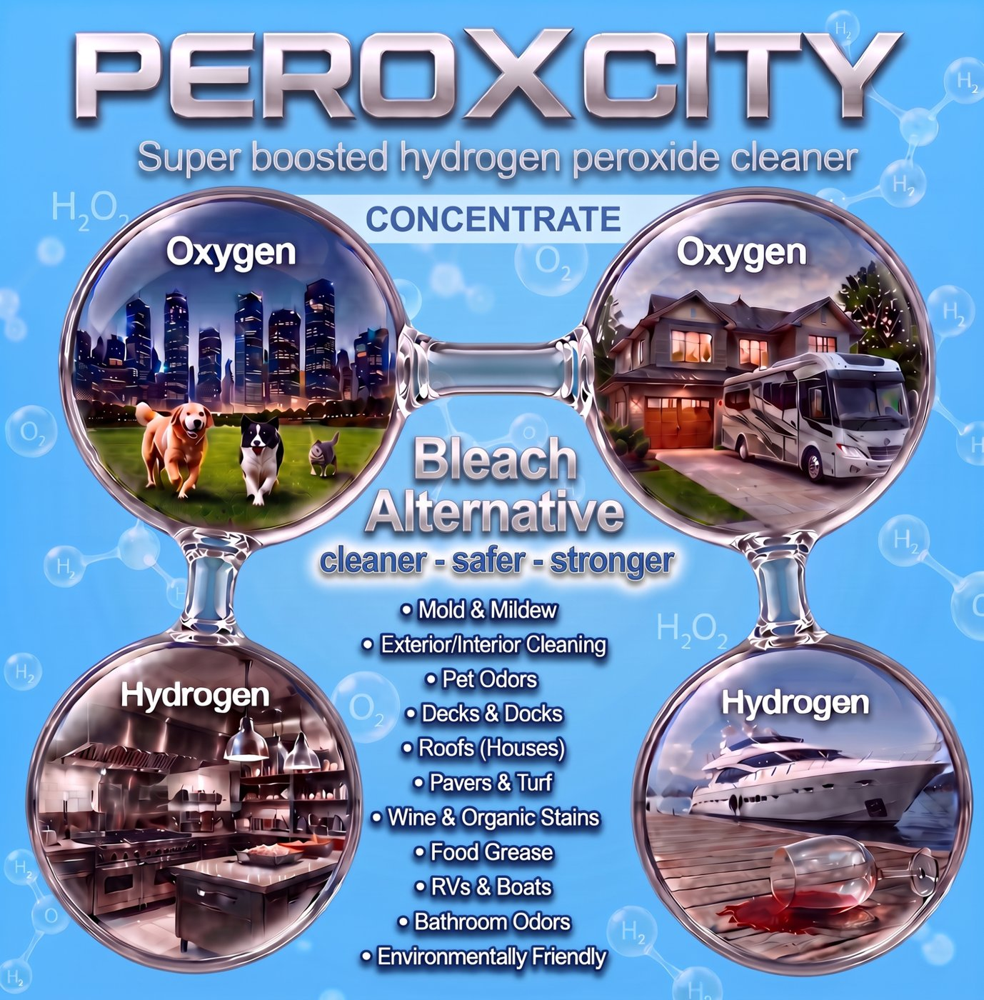

Keep out of reach of children. Wear chemical-resistant gloves, protective clothing and safety goggles. If on skin or in eyes: rinse with plenty of water for several minutes; remove contaminated clothing; get medical attention. If swallowed: rinse mouth, do not induce vomiting, call Poison Control 1-800-222-1222 or 911. Store upright in the original container, away from heat, sunlight and combustibles. Do not mix with other chemicals.
Concentrate Kit — Part A + Part B Accelerator

Part A is 35% hydrogen peroxide (an oxidizer: may intensify fire; causes severe skin burns and eye damage). Part B Accelerator (45%) causes severe skin burns and eye damage and may be corrosive to metals. One 1-gallon kit makes up to 5 gallons of finished cleaner.
Mixing — the order matters
Pour Part A into a clean plastic container. Never metal.
Add clean water first to reach your ratio (below). Avoid well water.
Only then add Part B Accelerator per the chart and stir or agitate for about a minute.
Never add Part B to undiluted Part A. Water goes in before the accelerator, every time. Once mixed, the cleaner stays active for months.
Mix ratios (Part A : water)
Ratio
Use it for
Part B per gallon of mix
1 : 4
Standard — roofs, siding, pavers, light soil, marine
Per the chart on the Part B label
1 : 3
Heavy growth, bio cleanups, fences and decks, mold and mildew
Per the chart on the Part B label
1 : 2
Super strength — commercial kitchens, grease, exhaust hoods
Pre-mixed and already activated at 7% hydrogen peroxide. No measuring, no Part B. Milder than the concentrate, but still wear gloves and eye protection. Pour into a plastic pump sprayer and go.
Directions
Spray generously and evenly onto a dry surface using a plastic sprayer. Start with a 10 ft × 10 ft test area. Oxygen foam forms where it meets contamination.
Wait 15–45 minutes. Warm, dry weather works faster; cool or humid days need the longer end. Keep the surface wet with foam; avoid direct sun where possible. A stiff brush or broom helps on stubborn spots — hard scrubbing is not needed.
Rinse with light pressure — a garden hose, or a pressure washer on a low setting. Work in small sections. It keeps working in the pores after rinsing.
Where to use it
Roofs: shingle, clay and concrete barrel tile, flat tile, TPO, painted or coated metal.
Exterior: siding, pavers, sidewalks, concrete, pool cages and screen enclosures, fences, wood and composite decks, masonry.
Home & health: pet odors, dumpster pads, restrooms, mold and mildew, biohazard cleanup, turf.
Commercial kitchens: food grease, exhaust hoods, tile and grout, filters and vents, stainless steel.
Marine: RVs, boats, golf carts, docks, fabric and sails — safe around water.
Do not use on
Galvanized metal or bare aluminum, including inexpensive aluminum gutters.
Painted surfaces without a test spot. Test a small hidden area first; poorly prepped paint can blister.
Anything with a metal sprayer or metal container.
Why it's safer than bleach
PeroXcity cleans with oxygen, not chlorine. It breaks down into water and oxygen, leaves no residue, won't kill landscaping, has no chlorine fumes, and doesn't strip shingle granules or wood fibers. It destroys the organic source of odors instead of masking them.
Storage & disposal
Store Part A upright in its original vented container, cool and out of sunlight. Keep Part A and Part B separate until mixing.
Mixed cleaner: keep in a labeled plastic container; stays active for months.
Empty containers: triple-rinse and recycle where accepted. Do not reuse for food or drink.
Safety Data Sheets
SDS for Part A, Part B and Ready-To-Use are available on request. Call or email and we'll send them the same day.